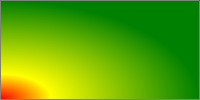
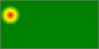
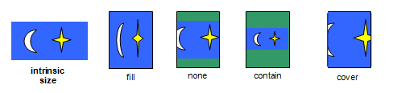

Gradients
A gradient is an image that smoothly fades from one color to another. These are commonly used for subtle shading in background images, buttons, and many other things. The two functions described in this section allow an author to specify such an image in a terse syntax, so that the UA can generate the image automatically when rendering the page. Gradients are a type of image, and can be used anywhere an image can, such as in the background-image or list-style-image properties. For official purposes, the syntax of a <gradient> is:
<gradient> = [ <linear-gradient> | <radial-gradient> ]
where <linear-gradient> and <radial-gradient> are defined in their applicable sections below.
As with the other <image> types defined in this specification, gradients can be used in any property that accepts images. For example:
background: linear-gradient(white, gray);list-style-image: radial-gradient(circle, #006, #00a 90%, #0000af 100%, white 100%)
In many places this section references a box, such as "the box's top-left corner" or "the box's right side". In all of these circumstances, the "box" refers to the 'CSS View Box' (see the "View Boxes" section of this spec for clarification). A gradient's 'Image View Box' has no intrinsic dimensions. This means that, for example, if you use a gradient in a background-image, the "box" will simply be the size of the background area. If you use a gradient in a list-style-image, the "box" will be a 1em square.
Linear Gradients
A linear gradient is created by specifying a gradient-line and then several colors placed along that line. The image is constructed by creating an infinite canvas and painting it with lines perdendicular to the gradient-line, with the color of the painted line being the color of the gradient-line where the two intersect. This produces a smooth fade from each color to the next, progressing in the specified direction.
linear-gradient() syntax
<linear-gradient> = linear-gradient(
[
[ [top | bottom] || [left | right] ]
||
<angle>
,]?
<color-stop>[, <color-stop>]+
);The first argument to the function specifies the gradient-line, which gives the gradient a direction and determines how color-stops are positioned. It may be omitted; if so, it defaults to "top".
The gradient-line may be specified in two different ways. The first is by specifying the angle the gradient-line should assume; this uses the standard algebraic notation for angles where 0deg points to the right, 90deg points up, and positive angles go counterclockwise. The starting-point and ending-point of the gradient-line are determined by extending a line in both direction from the center of the box at the angle specified. In the direction of the angle, the ending-point is the point on the gradient-line line where a line drawn perpendicular to the gradient-line would intersect the corner of the box in that direction. The starting-point is determined identically, except in the opposite direction of the angle.
The second way is to simply provide a side or corner of the box that the gradient should start at; the gradient will then automatically angle itself to extend from the specified side or corner to the opposite side or corner in a straight line. To be precise, the gradient is converted to the angle form described in the previous paragraph at used-value time. If a left, bottom, right, or top is given, the used value of the gradient is 0deg, 90deg, 180deg, or 270 deg, respectively. If a corner is given, the used value of the gradient is the angle necessary to place the starting-point of the gradient in that corner of the box.
The gradient's color stops are typically placed between the starting-point and ending-point on the gradient-line, but this isn't required - the gradient-line extends infinitely in both directions. The starting-point and ending-point are merely arbitrary distance markers - the starting-point defines where 0%, 0px, etc are located when specifying color-stops, and the ending-point defines where 100% is located. Color stops are allowed to have positions before 0% or after 100%.
Linear Gradient Examples
All of the following linear-gradient() examples are presumed to be backgrounds applied to a box that is 200px wide and 100px tall.
Below are various ways of specifying a basic vertical gradient:
linear-gradient(yellow, blue);
linear-gradient(top, yellow, blue);
linear-gradient(bottom, blue, yellow);
linear-gradient(-90deg, yellow, blue);
linear-gradient(270deg, yellow, blue);
linear-gradient(top, yellow 0%, blue 100%);
This gradient goes from the upper-left to the lower-right corner.
linear-gradient(top left, yellow, blue);
This demonstrates the use of an angle in the gradient. Compare this image with the previous example. In both gradients, the top-left of the box is pure yellow, and the bottom-right of the box is pure blue. The difference is in the angle that the gradient follows.
linear-gradient(-45deg, yellow, blue);
linear-gradient(315deg, yellow, blue);
This demonstrates a 3-color gradient, and how to specify the location of a stop explicitly:
linear-gradient(yellow, blue 20%, #0f0);
Radial Gradients
In a radial gradient, rather than colors smoothly fading from one side of the box to the other as with linear gradients, they instead emerge from a single point and smoothly spread outward in a circular or elliptical shape.
A radial gradient is specified by first pinpointing the center of the gradient, where the 0% ellipse will be, then specifying the size and shape of the 100% ellipse, ending with a list of color-stops just like a linear-gradient. Between the center and the ending-ellipse, and past the ending-ellipse, concentric ellipses are drawn and colored according to the specified color-stops.
radial-gradient() Syntax
<radial-gradient> = radial-gradient(
[<bg-position>,]?
[
[<shape> || <size>]
|
[<length> | <percentage>]{2}
,]?
<color-stop>[, <color-stop>]+
)The first argument to the function specifies the center of the ellipse. <bg-position> is taken from the Backgrounds and Borders Module, and has the same definition. It specifies the center of the gradient. If omitted, it defaults to center. Color-stop positions are measured along an imaginary line extending from the center of the gradient to the right.
The second argument to the function specifies the size and shape of the ending-ellipse. This can be specified in two ways, with different characteristics:
- Implicitly
-
The size and shape of the ending-ellipse can be defined implicitly with a size and shape keyword. The
<shape>is defined as<shape> = [ circle | ellipse ]circleindicates that the ending-ellipse will be a circle with a constant radius.ellipseindicates that the gradient-shape will be an axis-aligned ellipse (that is, its major and minor radiuses will be horizontal and vertical, not necessarily in that order).The
<size>keyword is defined as<size> = [ closest-side | closest-corner | farthest-side | farthest-corner | contain | cover ]If
<shape>iscircleand<size>isclosest-side, the ending-shape is a circle sized so that it exactly meets the side of the box closest to its center. For example, if the box was 100px wide and 200px tall, and the starting-point of the gradient-line was'10% 10%', then the closest side is the left side of the box (it is 10px from the starting-point, while the top is 20px from it, and the right and bottom sides are much further). The gradient-shape would be a circle with a radius of 10px. If<shape>isellipseand<size>isclosest-side, the gradient-shape is an ellipse sized so that it exactly meets the vertical and horizontal sides of the box closest to its center. Using the same box and starting-point as the previous example, the gradient-shape would be an ellipse with a 20px vertical radius and a 10px horizontal radius. (If necessary, such as if the starting-point is outside of the box, extend the sides of the box so that there is a line the ellipse can meet.)farthest-sideis identical toclosest-side, except that the gradient-shape is sized to meet the side of the box that is farthest from its center (or the farthest vertical and horizontal sides, in the case ofellipse).closest-cornerandfarthest-cornersize the gradient-shape so that it exactly meets the closest or farthest corner of the box from its center, respectively. If<shape>isellipse, the gradient-shape has the same ratio of width to height that it would ifclosest-sideorfarthest-sidewere specified, as appropriate.containis a synonym forclosest-side, andcoveris a synonym forfarthest-corner.If this implicit form is used, then it is converted to an equivalent explicit form (described below) at used-value time.
- Explicitly
-
Alternately, the ending-shape's size and shape can be defined explicitly, by providing two lengths or percentages. These measure the length of the horizontal and vertical axes of the ellipse, respectively. (The axis length is the length from the center of the ellipse to the edge, similar to the radius of a circle, not the diameter.)
Percentages used in the first value are relative to the width of the box, while percentages used in the second value are relative to the height of the box.
Both of the values must be positive - specifying either as zero or negative is a syntax error.
If this argument is omitted, it defaults to ellipse cover.
In certain circumstances the given parameters may define a degenerate shape - a circle or ellipse with a radius of 0. In these instances the gradient image is just a solid color equal to the color of the last color-stop in the rule. The following combinations of values will trigger this: closest-side if the starting-point is on a box edge, closest-corner if the starting-point is on a box corner, and ellipse and closest-corner if the starting-point is on a box edge.
The ending-point of the gradient-line is determined by extending a line from the starting-point in the direction specified by the <angle> in the first argument. The ending-point is where this line intersects the gradient-shape.
<color-stop> is defined identically to its treatment in linear-gradient(). Color-stops are placed on an imaginary line extending from the center of the gradient, with the 0% point at the center of the gradient, and 100% at the point where the line intersects the ending-ellipse. The color of each ellipse is equal to the color of the line where the ellipse intersects it. Distances past 100% can be specified, and simply indicate a color-stop placed on the line a corresponding distance from the center. Negative distances are allowed in a radial gradient and work the same as in linear gradients with respect to setting the color of the gradient-line, but colors before the starting-point of the gradient-line are not displayed. For example, radial-gradient(red -50px, yellow 100px) would produce an elliptical gradient which starts with a reddish-orange color in the center (the color 1/3 between red and yellow) and transitions to yellow at 100px wide.
Radial Gradient Examples
All of the following examples are applied to a box that is 200px wide and 100px tall.
These examples demonstrate the basic syntax for radial gradients:
radial-gradient(yellow, green);
radial-gradient(center, ellipse cover, yellow 0%, green 100%);
radial-gradient(50% 50%, farthest-corner, yellow, green);
radial-gradient(circle, yellow, green);
radial-gradient(red, yellow, green);
This image shows a gradient originating from somewhere other than the center of the box:
radial-gradient(bottom left, farthest-side, red, yellow 50px, green);
Here we illustrate a 'contain' gradient.
radial-gradient(20px 30px, contain, red, yellow, green);
radial-gradient(20px 30px, 20px 30px, red, yellow, green);
radial-gradient(20px 30px, circle contain, red, yellow, green);
radial-gradient(20px 30px, 20px 20px, red, yellow, green);
color-stop Syntax
The <color-stop> stands for:
<color> [ <percentage> | <length> ]?Color-stops are points placed along the line defined by the gradient-line at the beginning of the rule. Color-stops must be specified in order. Percentages refer to the length of the gradient-line, with 0% being at the starting point and 100% being at the ending point. Lengths are measured from the starting-point in the direction of the ending-point. Color-stops are usually placed between the starting-point and ending-point, but that's not required; the gradient-line extends infinitely in both directions, and a color-stop can be placed at any position on the line.
At each color-stop, the line is the color of the color-stop. Between two color-stops, the line's color is linearly interpolated between the colors of the two color-stops, with the interpolation taking place in premultiplied RGBA space. Before the first color-stop, the line is the color of the first color-stop. After the last color-stop, the line is the color of the last color-stop.
The following steps must be applied in order to process the list of color-stops. After applying these rules, all color-stops will have a definite position and they will be in ascending order:
- If the first color-stop does not have a position, its position defaults to 0%. If the last color-stop does not have a position, its position defaults to 100%.
- If a color-stop has a position that is less than the specified position of any color-stop before it in the list, its position is changed to be equal to the largest specified position of any color-stop before it.
- If any color-stop still does not have a position, then, for each run of adjacent color-stops without positions, set their positions so that they are evenly spaced between the preceding and following color-stops with positions.
If multiple color-stops have the same position, they produce an infinitesimal transition from the one specified first in the rule to the one specified last. In effect, the color suddenly changes at that position rather than smoothly transitioning.
It is recommended that authors not mix different types of units, such as px, em, or %, in a single rule, as this can cause a color-stop to unintentionally try to move before an earlier one. For example, the rule background-image: linear-gradient(red, yellow 100px, blue 50%) would work as expected as long as the background area is at least 200px tall. If it was 150px tall, however, the blue color-stop's position would be equivalent to "75px", which precedes the yellow color-stop, and would be corrected to a position of 100px.
Interpolating Gradients
Gradient images can be interpolated directly in CSS transitions and animations, smoothly animating from one gradient to another. There are only a few restrictions on what gradients are allowed to be interpolated:
- Both the starting and ending gradient must be of the same type; either both linear gradients or both radial gradients.
- Both the starting and ending gradient must have the same number of color-stops. (Remember, you can always pad a gradient with additional color-stops placed atop each other if you need to play with the number of color-stops.)
If the two gradients satisfy both of those constraints, they must be interpolated as described below. If not, they must be interpolated the same as images in general.
To interpolate two gradients, first convert each to their used value. This ensures that linear gradients have their direction specified as an angle, and radial gradients have their size and shape specified as two lengths. Then, interpolate each component of the gradient independently as specified by the interpolation function being used. For linear gradients, the angle and the color-stops are the only components. For radial gradients, the components are the horizontal position of the center, the vertical position of the center, the horizontal axis length, the vertical axis length, and the color-stops. Interpolating color-stops is described in the next paragraph; all the other components already have defined interpolation rules given in the CSS Transitions spec.
To interpolate color-stops, first match up each color-stop in the starting gradient to its corresponding color-stop in the ending gradient (as color stops are guaranteed to be ordered, this matching is unique and well-defined). Then, interpolate the position and color of each color-stop independently as specified by the interpolationg function being used.
Sizing Images and Objects in CSS
Images used in CSS may come from a number of sources, from defined image formats (such as gif, jpeg, etc), dedicated markup formats (such as SVG), and CSS-specific formats (such as the linear-gradient() value type defined in this specification). As well, a document may contain many other types of objects, such as video, plugins, or nested documents. These images and objects (just "objects" hereafter) may offer many types of sizing information to CSS, or none at all. This section defines generically the size negotiation model between the image or replaced content object and the CSS layout algorithms.
In order to define this handling, we must define a few terms, to make it easier to refer to various concepts:
- intrinsic dimensions
- The intrinsic dimensions are defined are the object's preferred, natural size or aspect ratio, if any. There can be an intrinsic height and intrinsic width, defining a definite rectangle. (Most bitmap images fall into this category.) There can be an intrinsic aspect ratio defining the relation of the width to the height, but no definite size. (SVG images designed to scale may fall into this category.) There can be just an intrinsic height or width. Or there can be no intrinsic dimensions at all, implying that the object has no preferred size or aspect ratio. (Embedded documents are often assumed to have no intrinsic size, as are CSS gradients, defined in this specification.)
If an object (such as an icon) has multiple sizes, then the largest size is used. If it has multiple aspect ratios of that size (or of no size), then the aspect ratio closest to the aspect ratio of the default image sizing area is use This is pretty arbitrary.
- specified size
- The specified size of an object is given by CSS, such as through the `object-fit` or `background-size` properties. The specified size can be a definite width and height, a set of constraints, or a combination thereof.
- CSS View Box
- The CSS View Box is the result of transforming the intrinsic dimensions into a concrete size, based on the specified size and the default image sizing area. A CSS View Box always has a definite height and width.
- default image sizing area
- The default image sizing area is a rectangle with a definite height and width used to determine the size of the CSS View Box when both the intrinsic dimensions and specified size are missing dimensions.
Images and objects in CSS are sized as follows:
- When an image or object is specified in a document, such as through url() value in a background-image property or a @src attribute on an <img> element, CSS queries the object for its intrinsic size.
- Using the intrinsic dimensions and the specified size, CSS then computes a CSS View Box that defines the size of the region the object will render in, as follows:
- If the specified size is just a definite width and height, the CSS View Box must be that width and height.
- If the specified size is just a definite width or just a definite height, then the CSS View Box must have the same width or height, as appropriate. The other dimension is calculated as follows:
- If the object has an intrinsic aspect ratio, the CSS View Box must have the same aspect ratio..
- Otherwise, if the object has an an intrinsic height or intrinsic width (whichever is missing from the specified size), then the CSS View Box must have that height or width.
- Otherwise, the CSS View Box must have the same width or height (whichever is missing from the specified size) as the default image sizing area.
- If the specified size is neither a definite width nor height, and has no additional contraints, the dimensions of the CSS View Box must be computed as follows:
- If the object has an intrinsic width and an intrinsic height, the CSS View Box must have that same height and width.
- If the object has only an intrinsic width or intrinsic height, and no intrinsic aspect ratio, the CSS View Box must have that height or width, and the width or height (whichever is missing from the intrinsic dimensions) of the default image sizing area.
- If the object has only an intrinsic aspect ratio, the CSS View Box must have that aspect ratio, and additionally be as large as possible without either its height or width exceeding the height or width of the default image sizing area.
- Otherwise, the CSS View Box must be the size of the default image sizing area.
- If the specified size has additional constraints, the CSS View Box must be sized to satisfy those constraints. (For example, object-fit:contain specifies slightly more complex handling for sizing replaced elements, and background-repeat:round can adjust the size specified in background-size so that the image fits an even number of times into the background positioning area.)
After determining the size of the CSS View Box, CSS positions it within the appropriate area according to any relevant properties, such as object-position or background-position, and asks the object to render itself using the dimensions of the CSS View Box. CSS does not define how objects render when the dimensions of the CSS View Box are different than the object's intrinsic dimensions. The object may adjust itself to match the dimensions of the CSS View Box in some way, or even render itself larger or smaller than the CSS View Box to satisfy sizing constraints of its own.
Overriding Image Resolutions: the 'image-resolution' property
The image resolution is defined as the number of image pixels per unit length, e.g., pixels per inch. Some image formats can record information about the resolution of images. This information can be helpful when determining the actual size of the image in the formatting process. However, the information can also be wrong, in which case it should be ignored. By default, CSS assumes a resolution of one image pixel per CSS ''px'' unit; however, the 'image-resolution' property allows using some other resolution.
| Name: | image-resolution |
|---|---|
| Value: | from-image || <dpi> |
| Initial: | ''1dppx'' |
| Applies to: | replaced elements and background images? |
| Inherited: | yes |
| Percentages: | N/A |
| Media: | visual |
| Computed value: | as specified |
The 'image-resolution' property specifies the resolution of images. Values have the following meanings:
- <resolution>
- The value sets the resolution of the image. In combination with ''from-image'', the specified resolution is only used if the image does not have a resolution.
- from-image
- The UA must look for the resolution in the image itself. If the image does not have a resolution, the specified <resolution> value is used, or ''1dppx'' if none is given.
This rule specifies that the UA should use the image resolution found in the image itself, falling back to 1 image pixel per CSS ''px'' unit
img { image-resolution: from-image }
Using this rule, the image resolution is set to 300dpi and the resolution in the image, if any, is ignored.
img { image-resolution: 300dpi }
These rules both specify that the UA should use the image resolution found in the image itself. If the image has no resolution, the resolution is set to 300dpi.
img { image-resolution: from-image 300dpi }
img { image-resolution: 300dpi from-image }
Orienting an Image on the Page: the 'image-orientation' property
Images from camera phones, digital cameras or scanners may be encoded sideways. For example, the first row of image data may represent the leftmost or rightmost column of image pixels. Furthermore, often such devices have limited resources, and do not have the capability to rotate the image into an upright orientation. However, this type of device may have internal knowledge or can accept input from its user as to the rotational correction to perform.
The image-orientation property provides a way to specify an "out-of-band" rotation to be applied to image source data. This facility is not intended to specify layout transformations such as arbitrary rotation or flipping the image in the horizontal or vertical direction. It is not needed to correctly orient an image when printing in landscape versus portrait orientation, as that rotation is done as part of layout. It should only be used to correct incorrectly-oriented images.
| Name: | image-orientation |
|---|---|
| Value: | <angle> |
| Initial: | 0deg |
| Applies to: | images |
| Inherited: | N/A |
| Percentages: | N/A |
| Media: | visual |
| Computed value: | normalized angle (''0deg'', ''90deg'', ''180deg'', or ''270deg'') |
'image-orientation' specifies an orthogonal rotation to be applied to an image before it is laid out. CSS layout processing applies to the image after rotation. This implies, for example:
- The intrinsic height and width are derived from the rotated rather than the original image dimensions;
- The height (width) property applies to the vertical (horizontal) dimension of the image, after rotation.
The following values for the 'image-orientation' property apply to an image:
- <angle>
- Positive values cause the image to be rotated to the right (in a clockwise direction), while negative values cause a rotation to the left. The angular value in degrees, radians or grads is rounded to the nearest cardinal angle. Values half way between cardinal angles, such as 45deg, round forward, in the direction of rotation. Values greater than 360deg or less than -360deg are moduloed to produce a value between 0deg and 360deg. Analogous rules apply for rad and grad unit values.
The following example rotates the image 90 degrees clockwise:
img.ninety { image-orientation: 90deg }
...
<img class="ninety" src=... />
The 'object-fit' Property
| Name: | object-fit |
|---|---|
| Value: | fill | contain | cover |
| Initial: | fill |
| Applies to: | replaced elements |
| Inherited: | yes |
| Percentages: | N/A |
| Media: | visual |
| Computed value: | specified value |
The 'object-fit' property specifies how the contents of a replaced element should be scaled relative to the box established by its used height and width. It also enables scaling a replaced element's contents up to a specified maximum size or down to a specified minimum size while preserving its aspect ratio.
Not all replaced elements can be scaled, but images typically can.
The contents of a replaced element with an intrinsic aspect ratio (which may be derived from intrinsic dimensions) are scaled as follows:
- fill
- Determine the used 'height' and 'width' as usual. Scale the content height and width independently so that the edges of the content just meet the edges of the box established by the used 'height' and 'width'.
- contain
- Determine the used 'height' and 'width' as usual, except if both 'height' and 'width' are 'auto', and the used value of at least one of 'max-width' and 'max-height' is not 'none', then compute the element's used width and used height as though the intrinsic dimensions of the contents were infinitely large numbers whose ratio is the actual intrinsic ratio of the contents.
- Scale the contents of the element, preserving their aspect ratio, to the largest size such that the width of the contents is less than or equal to the used width of the box and the height of the contents is less than or equal to the used height of the box.
- cover
- Determine the used 'height' and 'width' as usual, except if both 'height' and 'width' are 'auto', and the used value of at least one of 'min-width' and 'min-height' is not '0', then compute the used width and used height of the element as though the intrinsic dimensions of the contents were infinitesimally small numbers whose ratio is the actual intrinsic ratio of the contents.
- Scale the contents of the element, preserving their aspect ratio, to the smallest size such that the width of the contents is greater than or equal to the used width of the box and the height of the contents is greater than or equal to the height of the box.
The 'overflow' property determines how to render parts of the replaced element's content that extend beyond the edges of its box. See the 'image-position' property for positioning the object with respect to the element's box.
UAs may support 'image-fit' as an alias for 'object-fit' when parsing CSS declarations if they need to accommodate existing content that uses the 'image-fit' property name.
Note: the 'object-fit' property has similar semantics to the fit attribute in [[SMIL10]].

An example showing how each of the four values of 'object-fit' causes the replaced element (blue figure) to be scaled to fit its height/width box (shown with a green background), with overflow 'visible' and 'hidden', using the initial value for 'object-position'.
The 'object-position' Property
| Name: | object-position |
|---|---|
| Value: | [ [ <percentage> | <length> | left | center | right ] [ <percentage> | <length> | top | center | bottom ]? ] | [ [ left | center | right ] || [ top | center | bottom ] ] |
| Initial: | 50% 50% |
| Applies to: | replaced elements |
| Inherited: | yes |
| Percentages: | refer to width and height of box itself |
| Media: | visual |
| Computed value: | specified value |
The 'object-position' property determines the alignment of the replaced element inside its box. The values have the same meaning as the values for the 'background-position' property, using the image as the image and the content box as the positioning area. [[!CSS21]]
Note that areas of the box not covered by the replaced element will show the element's background.
UAs may support 'image-fit' as an alias for 'object-fit' when parsing CSS declarations if they need to accommodate existing content that uses the 'image-fit' property name.
Serialization
This section describes the serialization of all new properties and value types introduced in this specification.
Serializing Gradients
To serialize a linear gradient, let s initially be the empty string, run these steps, and then return s:
- Append "linear-gradient(" to s.
-
- If the first argument to the gradient function was a single keyword, serialize the keyword and append it to s.
- Otherwise, if the first argument to the gradient function was two keywords, serialize both keywords. Append them, separated by a space " ", to s.
- Otherwise, if the first argument to the gradient function was an <angle>, serialize the <angle> and append it to s.
- Otherwise, append "top" to s.
- If the first argument to the gradient function was not a color-stop, append a comma and a space ", " to s.
- For each color-stop in the gradient, do the following:
- Serialize the <color>, and append it to s.
- If a <length> or <percentage> was specified, append a space " " to s, then serialize the <length> or <percentage> and append it to s.
- If this is not the final color-stop, append a comma and a space ", " to s.
- Append a close parenthesis ")" to s.
To serialize a radial gradient, let s initially be the empty string, run these steps, and then return s:
- Append "radial-gradient(" to s.
- If a <bg-position> was specified in the first argument to the gradient function, serialize it and append it to s. Otherwise, append "center" to s.
- Append a comma and a space ", " to s.
-
- If a <shape> and/or <size> was specified in the second argument to the gradient function:
- If a <shape> was specified, serialize it as a keyword and append it to s. Otherwise, append "ellipse" to s.
- Append a space " " to s.
- If a <size> was specified, serialize it as a keyword and append it to s. Otherwise, append "cover" to s.
- Otherwise, if two <length>s or <percentage>s were specified in the second argument to the gradient function:
- Serialize the first <length> or <percentage> and append it to s.
- Append a space " " to s.
- Serialize the second <length> or <percentage> and append it to s.
- Otherwise, append "ellipse cover" to s.
- If a <shape> and/or <size> was specified in the second argument to the gradient function:
- Append a comma and a space ", " to s.
- For each color-stop in the gradient, do the following:
- Serialize the <color>, and append it to s.
- If a <length> or <percentage> was specified, append a space " " to s, then serialize the <length> or <percentage> and append it to s.
- If this is not the final color-stop, append a comma and a space ", " to s.
- Append a close parenthesis ")" to s.